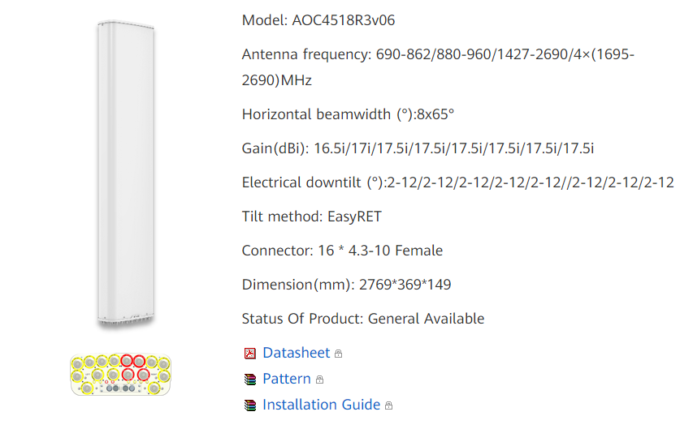

{kind=link}
{kind=link}
{kind=link}
Vielleicht kann uns ja ein Insider diese Frage beantworten...

Seit es LTE900 gibt ist es noch lahmer als mit LTE800. Schön daß jetzt auf 2 Frequenzen gesendet wird, aber bringt nix wenn damit nicht CA möglich ist. Im Gegenteil. Oft hängt das Handy auf 900 und das ist noch mieser als LTE 800.
Schön daß CA mit 1800 und 2100 und 900 funktioniert, aber was bringt das wo es nur 800 gibt??
Hat man da echt nur von 12 bis Mittag nachgedacht?
Oder gibt es da noch Besserungen?
Zb daß die 800 auf 1800 oder 2100(wo dann auch CA möglich ist)umgestellt werden weil es für die hohe Reichweite jetzt 900 gibt?
2021 wo groß von 5G und Gigabit die Rede ist kann das ja nicht euer Ernst sein:
Bearbeitet von Julian S.Ja wobei am Handy selbst halt ich sowas aus, denn da brauch ich nicht die hohe Geschwindigkeit.
Blöder ist es, wenn man einen Router daheim hat und da ist man mit sowas gefangen, denn das Handy ist ja unterwegs aber mit dem Router hast dann gar keine Chance mehr.
Beim Router wär es eh kein Problem. Da würde ich einfach mit der polnischen HManager App den Router auf B20 fixieren und fertig.
Aber mein Handy möchte ich nicht nur deswegen rooten. Und dann vielleicht noch riskieren daß die Online Banking Apps nicht mehr laufen.
Und irgendwie fühl man sich durch so einen Schildbürgerstreich dann doch ein wenig verschchaukelt . Wenn was gemacht wird(was am Land eh schon extrem selten ist) dann sollte es eine Verbesserung bringen aber keinesfalls eine Verschlechterung.
vor 58 Minuten schrieb Julian S.:Und irgendwie fühl man sich durch so einen Schildbürgerstreich dann doch ein wenig verschchaukelt .
Man darf nicht vergessen, dass man überall dort wo es keine 800 MHz(Band20) gibt eine bessere indoor Versorgung durch 900 MHz(Band 8) nun vorhanden ist.
Bearbeitet von Rexalius2000
Ja das ist durchaus ein Thema.
Man kann es niemanden wirklich recht machen aber gerade am Land geht es mehr um Versorgung über größere Strecken und da ist man mit niedrigeren Frequenzen besser dran.
Aber besser durchdacht hätte man das schon machen können. Zb überall B20 ausbauen. In den Städten wo es nicht überall B20 gibt würde es sich eh auszahlen. Am Land gibts eh schon überall B20.
Oder am Land von B20 auf ein Band umstellen das mit B8 für CA kompatibel ist damit das Problem nicht mehr besteht.
Wahrscheinlich ist es so gelaufen. Die Städter sollen auch guten Indoor Empfang haben, aber es soll nix kosten. Ob es auch am Land gut funktioniert? - Drauf gschi**n.
vor 21 Minuten schrieb Julian S.:Ob es auch am Land gut funktioniert? - Drauf gschi**n.
Es gibt noch keine Geräte die B20+B8 kombinieren können oder doch? Was ich weiß derzeit noch nicht .Dafür kann Magenta nichts, ich wohne auch übrigens am Land(ca.8000 Einwohner) und habe B20+B1+B3 und seit gut 2 Wochen 5G(NR) auf B78. Es ist immer eine Kosten-Nutzen Frage für den Provider,wo wenig Leute wohnen wird man nicht unbedingt sein Mobilfunknetz so schnell erweitern.
Das einzige was ich zu bemängeln habe ist das man auf B8 nur 5 MHz aktiviert hat. Das hätte man besser lösen können.
Das ist es ja. Es gibt noch keine Geräte die CA mit B20+B8 können. Da geb ich dir recht daß Magenta dafür nix kann. Aber Magenta wird es wohl nicht unbekannt sein daß es noch keine Geräte gibt die CA mit B20+B8 können und hätten das ganze entsprechend umsetzen können. Daher die Vermutung was das angeht was du von mir zitiert hast. Bei aktiven Band8 das Band20 auf zb Band3 oder Band1 umzustellen würde ja nichteinmal zusätzliche Hardware erfordern.
Mit den nur 5Mhz muß ich dir recht geben. Wären es 10 Mhz wär es egal ob man auf B20 oder B8 landet. Wär zwar kein Fortschritt, aber immerhin kein Schritt zurück. Das ist das was mir noch mehr sauer aufstößt.
Hat die LTE900 Aktivierung etwas mit 5G zu tun? Zb daß LTE B20 auf 5G umgestellt wird? Oder bleibt das so wie es ist? Wird B28 flächendeckend ausgerollt werden so wie LTE B20 oder nur auf einigen Flecken so wie es bei den anderen Frequenzbändern der Fall ist?
Gibt es keine Informationen dazu?
Leider von meiner Seite nicht - da können nur die Techniker von Magenta was dazu sagen.
Warum geht B20+B8 eigentlich nicht.
Beim B535 könnte ich diese Kombi auswählen aber bei mir passiert da nichts.
Wie kannst du diese Kombi auswählen?
Kann die Huawei 5G Box CA mit B20+B8?
Oder vielleicht auch für die Zukunft schon B28+B20+B8?
Ich mach die Selektion mit der APP "HUACTRL"
Ich weiß aber nicht, ob deine Box unterstützt wird.
Ich habe die Box nicht. Mich würde nur interessieren ob es schon zumindest ein Gerät gibt was CA mit den Bändern 28,20 und 8 unterstützen. Sonst ist man echt der Blöde am Land. Mit den anderen Bändern 3,1 und 7 ist CA kein Problem.
Aber am Land das Band 20 mit bündeln bringt oft gar nichts mehr, denn dieses ist einfach nur noch überlastet.
Ich hab bei mir die Erfahrung gemacht, dass neben B20 meist nur B1 und B3 angeboten wird.
Gibt es bei dir am Land wirklich diese Kombination?
Das ist ja das Blöde. Bei mir gibt es nur B20 und B8. Für B3 und B1(das hängt noch von der Rosinenpickerei bei 3G nach)war Magenta viel zu geizig. Und da es nur für B28 strenge Auflagen gibt, sehe ich die Zukunft nur in B20,B8 und B28.
Außer von der RTR kommen bei der nächsten Vergabe von B3,B1 und B7 genauso strenge Auflagen wie es beim B20 der Fall war.
Denn daß Magenta am Land mehr ausbaut als vorgeschrieben ist, halte ich für sehr fraglich. Bis jetzt hab ich das auf jeden Fall noch nicht erlebt.
vor 1 Stunde schrieb Julian S.:Das ist ja das Blöde. Bei mir gibt es nur B20 und B8. Für B3 und B1(das hängt noch von der Rosinenpickerei bei 3G nach)war Magenta viel zu geizig.
Geizig glaub ich nicht. Es wird vermutlich auf die Einwohnerzahl des betroffenen Gebiet ankommen. Es bringt ja bekanntlich nichts, wenn man z. B. auf einer wenig befahrenen Autobahn eine 4 Spur dazu baut.Klar ist es wünschenswert, wenn man auf der "Datenautobahn" schneller unterwegs ist, nur wird sich das für einen Provider in einen nicht so sehr dicht besiedelten Gebiet der Ausbau nicht auszahlen.
Bearbeitet von Rexalius2000
Und bei mir gibt es wiederum nur B3, B1 und B20.
Allerdings hab ich die Kombi B1 und B3 und bekomme damit wirklich richtig tolle Geschwindigkeiten.
Bei mit ist fast alles verfügbar was Magenta so anbietet. Trotz allem ,ist zur Primetime die Geschwindigkeit nicht berauschend da diese Magenta Mobilfunkstadion die einzige im Ort ist mit ca. 8000 Einwohner.
Bearbeitet von Rexalius2000
Die Frage ist dabei - warum werden da bei einem Masten soviele Frequenzen angeboten?
Das erschließt sich mir nicht so ganz.
Eine gute Frage, wahrscheinlich weil er der einzige ist im Umkreis von 5 Kilometer und der Masten mit Glas angebunden ist?
Vielleicht - weil der Router immer zum höheren Frequenzband springt, wenn der Empfang besser wird und damit die unteren Frequenzen entlastet.
Ist aber nur eine Vermutung.
Da könntest du recht haben .Kann sein das dies vom Netz so gesteuert wird.
Vielleicht kann uns ja ein Insider diese Frage beantworten...

Die erwähnte Mobilfunkstadion als sharing Masten für Magenta und A1(Noch ohne 5G Antennen).
Die maximale Geschwindigkeit meines Tarifs erreiche ich bis ca. 20 Uhr bis sie dann auf ca. 80-90 MBit/s zurückgeht. Ab 23 Uhr ist die maximale erreichbare Geschwindigkeit wieder verfügbar. Bin jedenfalls sehr zufrieden seit 5G(NR) auf dem Masten aktiviert wurde

Sieht man bei uns nicht so oft, dass sich Magenta und A1 den Masten teilen. Aber deine Performance ist ok. Ich hab am Wochenende eine neue Antenne montiert. Jetzt hab ich echt tolle Werte. Sinr sogar schon bei +27.
Voller Download und upload. Am Abend ändert auch bei mir die erwähnten Einbrüche.
Bearbeitet von Christian_ESeit es LTE900 gibt ist es noch lahmer als mit LTE800. Schön daß jetzt auf 2 Frequenzen gesendet wird, aber bringt nix wenn damit nicht CA möglich ist. Im Gegenteil. Oft hängt das Handy auf 900 und das ist noch mieser als LTE 800.
Schön daß CA mit 1800 und 2100 und 900 funktioniert, aber was bringt das wo es nur 800 gibt??
Hat man da echt nur von 12 bis Mittag nachgedacht?
Oder gibt es da noch Besserungen?
Zb daß die 800 auf 1800 oder 2100(wo dann auch CA möglich ist)umgestellt werden weil es für die hohe Reichweite jetzt 900 gibt?
2021 wo groß von 5G und Gigabit die Rede ist kann das ja nicht euer Ernst sein:
Bearbeitet von Julian S.Ursprünglich war es ein Max.Mobil Mobilfunkstadion mit Rundstrahlern für GSM die seit 1996 auf dem Hügel uns versorgt. Im Jahr 2002 hat sich dann A1 eingemietet und der bestehende Container wurde vergrößert.
vor 7 Stunden schrieb Rexalius2000:
Geizig glaub ich nicht. Es wird vermutlich auf die Einwohnerzahl des betroffenen Gebiet ankommen. Es bringt ja bekanntlich nichts, wenn man z. B. auf einer wenig befahrenen Autobahn eine 4 Spur dazu baut.Klar ist es wünschenswert, wenn man auf der "Datenautobahn" schneller unterwegs ist, nur wird sich das für einen Provider in einen nicht so sehr dicht besiedelten Gebiet der Ausbau nicht auszahlen.
Also ist das nur blödes Politikergeschwafel wenn von "österreichweit mobile Gigabitanschlüsse bis 2030" die Rede ist?
Oder gibt es vielleicht Pläne daß die Ausbauverpflichtungen massiv verschärft werden? Und auch wenns kein Gigabit ist daß man zumindest nicht ewig auf einem Stand verharrt. Was spätestens dann problematisch wird wenn mal eine einzelne Anwendung mehr Bandbreite benötigt als die Mobilfunkzelle liefern kann. Wenn es mal Anwendungen gibt die >100 Mbit/s benötigen reißt man mit dem 10 Mhz B20 Ausbau nix mehr. Selbst als einziger Nutzer in der Mobilfunkzelle.
Dann ist es das Gleiche wie beim 2 Klassen Netz zu UMTS Zeiten wo man am Land wo es nur EDGE gegeben hat von multimedialen Inhalten ausgeschlossen war.
vor 38 Minuten schrieb Julian S.:Dann ist es das Gleiche wie beim 2 Klassen Netz zu UMTS Zeiten wo man am Land wo es nur EDGE gegeben hat von multimedialen Inhalten ausgeschlossen war.
Ich verstehe natürlich, dass du mit der Versorgung von Magenta bei dir nicht zufrieden bist, das hast du ja bereits hier öfters erwähnt. Aber jeder Provider wird sich auf den Kosten-Nutzen-Faktor höchstwahrscheinlich berufen sowie bei mir wo das Glasfaserkabel ca.200 Meter im Boden vor sich hinvegetiert und auf Anfrage beim ISP und der Gemeinde mir mitgeteilt wurde, dass in meiner Straße kein Bedarf besteht für die Erweiterung dieser Versorgung über FTTH. Was ich damit sagen will, jeder Provider wird den Kosten-Nutzen-Faktor zuerst überprüfen ob sich ein Ausbau auszahlt. Wegen 1 oder 5 "Poweruser" wird man die Versorgung nicht oder erst später erweitern.
So wie ich das mitbekommen habe. wohnst du in einem kleinen Ort in Niederösterreich, nur frage ich mich dann immer bei deinen Beiträgen warum du keine Alternativen für deine Bedürfnisse findest wie z.B nöGIG? Dort könnte sich wie ich das mitbekommen habe auch Magenta einmieten? Dieses Projekt scheint ja derzeit sehr aktuell in NÖ zu sein.
Bearbeitet von Rexalius2000Internet für zuhause hab ich sowieso seit fast dem Anfang von A1 weil die 20 Mhz B20 haben. Magenta hab ich gleich nach 3 Wochen retourniert nachdem A1 in Betrieb gegangen ist. Am Handy hab ich(noch) Magenta weil ich seit 2004 Magenta habe und weil ich einen 14€ Kündigungstarif bekommen konnte.
Mir geht es mehr um die Zukunft als jetzt und gleich.
Und da ich in einem kleinen Ort wohne wo ausbaumäßig ohne Zwang nix geht, bleiben mir nur 700, 800 und 900 Mhz und darum das Interesse an Geräten die CA mit diesen Bändern unterstützen. Um zur ursprünglichen Frage zurückzukehren.
Wo es eh schon B3 und B1 gibt hat man etwas von LTE B8 weil damit CA funktioniert. Aber gerade da wo es nur B20 gibt hat man nix davon. Da kommt man doch verar**** vor.
Wenn nur B20 durch B3 ersetzt werden würde. Wäre ohne weitere Hardware möglich und man hätte für die Flächendeckung B8 und für mehr Bandbreite B3 was doppelt so viel ist wie bei B20. Und CA wäre auch möglich. Aber wahrscheinlich schert sich Magenta da einen Dreck drum.
Um nochmal kurz auf das Thema 4G 900 MHz und CA zurückzukommen.
Soweit ich es mitbekommen habe, können weder aktuelle High-End Smartphones noch der 5G CPE Pro 2 CA mit 900 & 800 MHz.
Insgesamt ist aber dennoch ein Kapazitätsupgrade vorhanden, wobei ein einzelner Nutzer dies wohl weniger spürt, weil die Hardware-Hersteller diese Kombination noch nicht umgesetzt haben. Letzteres ist besonders spannend, da die deutsche Schwester von Magenta bereits seit Jahren diese Kombi im Netz aktiv hat.
Von mobilen Gigabit Anschlüssen in der Fläche bis 2030 war eher nicht die Rede. Eher von generell Gigabit in der Fläche egal welche Technologie. Wobei dieses Ziel in Regionen ohne Coax-Kabel Anbieter (wie Magenta) oder FTTH Anbieter eher unwahrscheinlich ist. Mit 3.4 - 3,8 GHz kann man zwar derzeit hohe Geschwindigkeiten erreichen, aber da werden auch etwas mehr als ein Gigabit auf einige Nutzer aufgeteilt. Für wirkliches Gigabit 5G bedarf es mmWave 5G.
Und da wäre man beim nächsten Thema. So wie es derzeit aussieht steht bereits Ende nächstes Jahr die nächste Frequenzauktion bevor. Diesmal mit Fokus auf mmWave 5G im 26 GHz Bereich. Wobei zunächst nur ein Teil des 26 GHz Spektrum angeboten wird, wegen noch bestehender Richtfunk-Nutzung in diesem Band. Der Nachteil ist flächendeckendes mmWave 5G auf diesen hohen Frequenzen kann nur in den Ballungsgebieten mit entsprechender Senderdichte umgesetzt werden. Und noch ein weiterer Nachteil bei mmWave in Europa ist, dass die Hardware-Hersteller bisher keine mmWave fähige Hardware in Europa verkaufen. Heißt Geräte mit entsprechenden Antennen wir es aller frühestens nächstes Jahr in Europa geben
vor 7 Minuten schrieb NTM:Um nochmal kurz auf das Thema 4G 900 MHz und CA zurückzukommen.
Soweit ich es mitbekommen habe, können weder aktuelle High-End Smartphones noch der 5G CPE Pro 2 CA mit 900 & 800 MHz.
Insgesamt ist aber dennoch ein Kapazitätsupgrade vorhanden, wobei ein einzelner Nutzer dies wohl weniger spürt, weil die Hardware-Hersteller diese Kombination noch nicht umgesetzt haben. Letzteres ist besonders spannend, da die deutsche Schwester von Magenta bereits seit Jahren diese Kombi im Netz aktiv hat.
Von mobilen Gigabit Anschlüssen in der Fläche bis 2030 war eher nicht die Rede. Eher von generell Gigabit in der Fläche egal welche Technologie. Wobei dieses Ziel in Regionen ohne Coax-Kabel Anbieter (wie Magenta) oder FTTH Anbieter eher unwahrscheinlich ist. Mit 3.4 - 3,8 GHz kann man zwar derzeit hohe Geschwindigkeiten erreichen, aber da werden auch etwas mehr als ein Gigabit auf einige Nutzer aufgeteilt. Für wirkliches Gigabit 5G bedarf es mmWave 5G.
Und da wäre man beim nächsten Thema. So wie es derzeit aussieht steht bereits Ende nächstes Jahr die nächste Frequenzauktion bevor. Diesmal mit Fokus auf mmWave 5G im 26 GHz Bereich. Wobei zunächst nur ein Teil des 26 GHz Spektrum angeboten wird, wegen noch bestehender Richtfunk-Nutzung in diesem Band. Der Nachteil ist flächendeckendes mmWave 5G auf diesen hohen Frequenzen kann nur in den Ballungsgebieten mit entsprechender Senderdichte umgesetzt werden. Und noch ein weiterer Nachteil bei mmWave in Europa ist, dass die Hardware-Hersteller bisher keine mmWave fähige Hardware in Europa verkaufen. Heißt Geräte mit entsprechenden Antennen wir es aller frühestens nächstes Jahr in Europa geben
Da ist es dann ja noch verwunderlicher daß die CA Kombination noch von keinen Geräten unterstützt wird. Deutschland ist ja nicht gerade ein kleines unbedeutendes Land. Mmwave habe ich aufgrund der Frequenzen am Land schon abgehakt. Aber Frequenzen bis zum Band1 lassen sich schon auch mit Flächendeckung am Land einsetzen.
Daß in den Städten der Fortschritt zu kurz kommt braucht man keine Sorgen haben.
Aber wie schaut die Mobilfunk Zukunft am Land aus ???
Wird nur 700 Mhz flächendeckend ausgebaut? Oder auch 1500Mhz?
Bis jetzt wurden ja ausschließlich Frequenzen <1Ghz netzweit ausgebaut.
Genau, kommen wir auf das Thema zurück,sorry für das Offtopic

vor 17 Minuten schrieb Julian S.:Wenn nur B20 durch B3 ersetzt werden würde. Wäre ohne weitere Hardware möglich und man hätte für die Flächendeckung B8 und für mehr Bandbreite B3 was doppelt so viel ist wie bei B20. Und CA wäre auch möglich. Aber wahrscheinlich schert sich Magenta da einen Dreck drum.
Was nur mit einem Antennentausch möglich wäre.
Auch mit Multiband-Antennen können nicht beliebige Bänder aktiviert werden.
Bei dir ist wahrscheinlich eine Dual-Band-Antenne im Einsatz (vier Anschlüsse).
Es gibt keine Antennen, welche auf demselben Port B20 oder B3 senden könnten.
Entweder ein Port ist für unter einen GHz ausgelegt oder für über ein GHz.
Hier als Beispiel eine Antenne welche acht Frequenzen parallel senden könnte, wobei der Split zwischen Ports unter und über einen GHz gut erkennbar ist.

vor 5 Minuten schrieb Julian S.:Aber wie schaut die Mobilfunk Zukunft am Land aus ???
Wird nur 700 Mhz flächendeckend ausgebaut? Oder auch 1500Mhz?
Bis jetzt wurden ja ausschließlich Frequenzen <1Ghz netzweit ausgebaut.
Öffentlich bekannt ist ja, dass der 700 MHz Ausbau bereits angelaufen ist und eine dreistellige Anzahl an Standorten noch dieses Jahr 700 MHz bekommen wird.
Zu 1500 MHz ist noch nichts bekannt. Wahrscheinlich wird zuerst 5G standalone aktiviert werden und dann 1500 MHz ausgebaut.
Ein flächiger 1500 MHz Ausbau würde durchaus Sinn ergeben, da mit 700MHz + 1500MHz ~500 Mbit/s an Kapazität möglich wären.
Zudem werden auch die bestehenden 4G/3G/2G Antennen an Standorten, welche mit n78 5G ausgebaut werden, ersetzt, wodurch diese älteren Antennen, welche auch bereits einige Möglichkeiten aufweisen, an anderen Standorten erneut zum Einsatz kommen könnten.
Wie es genau weitergeht mit dem 5G Ausbau bei Magenta Richtung 1500MHz und 5G SA, wissen bislang wohl nur relativ wenige Mitarbeiter des Unternehmens. Wir werden wohl die Pressemitteilungen abwarten müssen, um zu erfahren, wie es weiter geht.
vor 20 Minuten schrieb NTM:Was nur mit einem Antennentausch möglich wäre.
Auch mit Multiband-Antennen können nicht beliebige Bänder aktiviert werden.
Bei dir ist wahrscheinlich eine Dual-Band-Antenne im Einsatz (vier Anschlüsse).
Es gibt keine Antennen, welche auf demselben Port B20 oder B3 senden könnten.
Entweder ein Port ist für unter einen GHz ausgelegt oder für über ein GHz.
Hier als Beispiel eine Antenne welche acht Frequenzen parallel senden könnte, wobei der Split zwischen Ports unter und über einen GHz gut erkennbar ist.
Solche Antennen A1 am Mast hängen was ich erkennen konnte.
Magenta hat tatsächlich 2 Sektorantennen pro Abstrahlrichtung.
Müssen für Band 28 nicht sowieso die Antennen getauscht werden?
vor 8 Minuten schrieb NTM:Öffentlich bekannt ist ja, dass der 700 MHz Ausbau bereits angelaufen ist und eine dreistellige Anzahl an Standorten noch dieses Jahr 700 MHz bekommen wird.
Zu 1500 MHz ist noch nichts bekannt. Wahrscheinlich wird zuerst 5G standalone aktiviert werden und dann 1500 MHz ausgebaut.
Ein flächiger 1500 MHz Ausbau würde durchaus Sinn ergeben, da mit 700MHz + 1500MHz ~500 Mbit/s an Kapazität möglich wären.
Zudem werden auch die bestehenden 4G/3G/2G Antennen an Standorten, welche mit n78 5G ausgebaut werden, ersetzt, wodurch diese älteren Antennen, welche auch bereits einige Möglichkeiten aufweisen, an anderen Standorten erneut zum Einsatz kommen könnten.
Wie es genau weitergeht mit dem 5G Ausbau bei Magenta Richtung 1500MHz und 5G SA, wissen bislang wohl nur relativ wenige Mitarbeiter des Unternehmens. Wir werden wohl die Pressemitteilungen abwarten müssen, um zu erfahren, wie es weiter geht.
500 Mbit/s wäre echt ein Riesensprung. Ist zwar kein Gigabit aber die geringere Auslastung am Land würde das sicher wieder wett machen.
Bleibt nur zu hoffen bald von offizieller Seite etwas dazu erfahren. Vielleicht ja im Herbst als Ankündigung für 2022.
vor 10 Stunden schrieb Rexalius2000:
Ja aber nur noch ganz vereinzelt. Ich kenn gerade noch 2 solche Sender - einer davon neben der Bundesstraße.
Ob die aber noch in Betrieb sind?
Zumindest in meiner Gegend sehe ich diese Antennen nur mehr bei A1 im Einsatz. Magenta hat überall umgebaut.
Sind das eher dann die minimal Versorgungsantennen für entlegene Gebiete?
Das waren die ursprünglich verwendeten Antennen für GSM bei A1 als auch bei Magenta.
Vom Gewicht und der Windlast her optimal, vorallem für leichter gebaute Masten.
Aber MIMO wie es bei LTE eingesetzt wird ist wohl nicht möglich. Das bedeutet nur halbe Bandbreite.
Wenn überhaupt halbe Bandbreite. Ich würde mal behaupten, die Dinger sollen die Not/Grundversorgung noch abdecken. Von Performance kann ich mir bei diesen Antennen nicht mehr viel vorstellen.

Es läuft LTE Band 20 und GSM 900 auf diesen Masten. Man findet sie immer wieder in abgelegenen Gebieten hier bei uns in Tirol.
Bist du dir beim ersten Bild sicher, dass da LTE mit B20 läuft?
Ich bezweifle das.
Das wird wahrscheinlich GSM 900 sein.
EDIT: Werde es wenn es die Zeit zulässt überprüfen

Ja das glaub ich eher

{kind=link}
{kind=link}
.jpg.529b16f20dde3dd159904e6dd1be6068.jpg){kind=link}
{kind=link}
{kind=link}
{kind=link}
{kind=link}